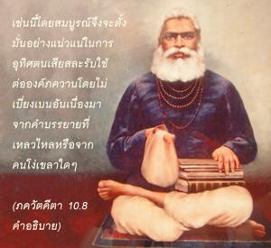
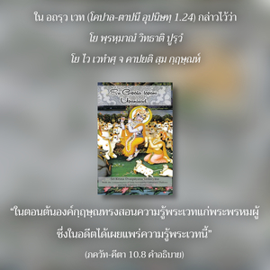

ข้าคือแหล่งกำเนิดของโลกทิพย์และโลกวัตถุทั้งหมด ทุกสิ่งทุกอย่างกำเนิดมาจากข้า ผู้มีปัญญารู้เช่นนี้โดยสมบูรณ์จะปฏิบัติในการอุทิศตนเสียสละรับใช้ต่อข้า และบูชาข้าอย่างสุดหัวใจ


นักวิชาการผู้คงแก่เรียนศึกษาคัมภีร์พระเวทอย่างสมบูรณ์ และได้รับข้อมูลจากผู้ที่เชื่อถือได้ เช่น องค์ ไจตนฺย และรู้ว่าจะนำคำสอนเหล่านี้ไปใช้อย่างไร เพื่อให้เข้าใจว่าองค์กฺฤษฺณทรงเป็นแหล่งกำเนิดของทุกสิ่งทุกอย่างทั้งในโลกวัตถุและโลกทิพย์ เพราะเมื่อรู้เช่นนี้โดยสมบูรณ์จึงจะตั้งมั่นอย่างแน่วแน่ในการอุทิศตนเสียสละรับใช้ต่อองค์ภควานฺ โดยไม่เบี่ยงเบนจากคำบรรยายที่เหลวไหล หรือจากคนโง่เขลาใดๆ วรรณกรรมพระเวททั้งหมดยอมรับว่าองค์กฺฤษฺณ คือ แหล่งกำเนิดของพระพรหม พระศิวะ และเทวดาทั้งหลาย ใน อถรฺว เวท (โคปาล-ตาปนี อุปนิษทฺ 1.24) กล่าวไว้ว่า โย พฺรหฺมาณํ วิทธาติ ปูรฺวํ โย ไว เวทำศฺ จ คาปยติ สฺม กฺฤษฺณห์ “ในตอนต้นองค์กฺฤษฺณทรงสอนความรู้พระเวทแก่พระพรหมผู้ซึ่งในอดีตได้เผยแพร่ความรู้พระเวทนี้” และ นารายณ อุปนิษทฺ (1) กล่าวว่า อถ ปุรุโษ ห ไว นารายโณ ’กามยต ปฺรชาห์ สฺฤเชเยติ “จากนั้นองค์ภควานฺ นารายณ ทรงปรารถนาจะสร้างสิ่งมีชีวิต” อุปนิษทฺ กล่าวต่อไปว่า นารายณาทฺ พฺรหฺมา ชายเต, นารายณาทฺ ปฺรชาปติห์ ปฺรชายเต, นารายณาทฺ อินฺโทฺร ชายเต, นารายณาทฺ อษฺเฏา วสโว ชายนฺเต, นารายณาทฺ เอกาทศ รุทฺรา ชายนฺเต, นารายณาทฺ ทฺวาทศาทิตฺยาห์ “จากพระนารายณ์ พระพรหมประสูติ จากพระนารายณ์ ผู้อาวุโสสูงสุดต่างๆ ก็ประสูติเช่นกัน จากพระนารายณ์พระอินทร์ประสูติ จากพระนารายณ์ วสุ ทั้งแปดองค์ประสูติ จากพระนารายณ์ รุทฺร ทั้งสิบเอ็ดองค์ประสูติ จากพระนารยณ์ อาทิตฺย สิบสององค์ประสูติ” พระนารายณ์องค์นี้ทรงเป็นภาคแบ่งแยกขององค์กฺฤษฺณ
ได้กล่าวไว้ในพระเวทเล่มเดียวกันว่า พฺรหฺมโณฺย เทวกี-ปุตฺรห์ “กฺฤษฺณ บุตรของพระนาง เทวกี คือ องค์ภควานฺ” ( นารายณ อุปนิษทฺ 4) จากนั้นได้กล่าวต่อไปว่า เอโก ไว นารายณ อาสีนฺ น พฺรหฺมา เนศาโน นาโป นาคฺนิ-โสเมา เนเม ทฺยาวฺ-อาปฺฤถิวี น นกฺษตฺราณิ น สูรฺยห์ “ในตอนต้นของการสร้างมีเพียงองค์ภควานฺ พระนารายณ์ ไม่มีพระพรหม ไม่มีพระศิวะ ไม่มีน้ำ ไม่มีไฟ ไม่มีดวงจันทร์ ไม่มีดวงดาวในท้องฟ้า ไม่มีดวงอาทิตย์” (มหา อุปนิษทฺ 1) ใน มหา อุปนิษทฺ กล่าวไว้เช่นกันว่า พระศิวะประสูติจากพระนาลาฎ (หน้าผาก) ขององค์ภควานฺ ดังนั้น พระเวทกล่าวว่าองค์ภควานฺผู้ทรงสร้างพระพรหม และพระศิวะควรได้รับการบูชา
ใน โมกฺษ-ธรฺม องค์กฺฤษฺณทรงตรัสว่า
ปฺรชาปตึ จ รุทฺรํ จาปฺยฺ
อหมฺ เอว สฺฤชามิ ไว
เตา หิ มำ น วิชานีโต
มม มายา-วิโมหิเตา
“ข้าเป็นผู้ให้กำเนิดบรรดาผู้อาวุโสสูงสุด พระศิวะ และองค์อื่นๆ ถึงแม้ว่าพวกเขาไม่รู้ว่าข้าเป็นผู้ให้กำเนิด เพราะว่าหลงผิดอยู่ในพลังงานแห่งความหลงของข้า” ใน วราห ปุราณ ได้กล่าวไว้เช่นกันว่า
นารายณห์ ปโร เทวสฺ
ตสฺมาชฺ ชาตศฺ จตุรฺมุขห์
ตสฺมาทฺ รุโทฺร ’ภวทฺ เทวห์
ส จ สรฺว-ชฺญตำ คตห์
“พระนารายณ์ คือ องค์ภควานฺ และจากพระองค์พระพรหมประสูติ จากพระพรหมพระศิวะประสูติ”
องค์ศฺรีกฺฤษฺณทรงเป็นแหล่งกำเนิดของการให้กำเนิดทั้งหมด พระองค์ทรงถูกเรียกว่าเป็นแหล่งกำเนิดของทุกสิ่งทุกอย่างที่มีประสิทธิภาพสูงสุด ทรงตรัสว่า “เพราะว่าทุกสิ่งทุกอย่างกำเนิดมาจากข้า ข้าคือแหล่งกำเนิดเดิมแท้ของทุกสิ่งทุกอย่าง ทุกสิ่งทุกอย่างอยู่ภายใต้ข้า ไม่มีผู้ใดอยู่เหนือข้า” ไม่มีผู้ควบคุมสูงสุดอื่นใดนอกจากองค์กฺฤษฺณ ผู้เข้าใจองค์กฺฤษฺณเช่นนี้จากพระอาจารย์ทิพย์ที่เชื่อถือได้ และจากการอ้างอิงของวรรณกรรมพระเวท จะใช้พลังงานของเขาทั้งหมดในกฺฤษฺณจิตสำนึก และกลายมาเป็นผู้รู้อย่างแท้จริง เมื่อเปรียบเทียบกับบุคคลเช่นนี้บุคคลอื่นๆ ทั้งหมดผู้ไม่รู้จักองค์กฺฤษฺณอย่างถูกต้องเป็นคนโง่เขลา คนโง่เขลาเท่านั้นที่พิจารณาว่าองค์กฺฤษฺณทรงเป็นมนุษย์ธรรมดา บุคคลในกฺฤษฺณจิตสำนึกไม่ควรสับสนกับคนโง่เขลาเหล่านี้ ควรหลีกเลี่ยงคำบรรยายและการตีความ ภควัท-คีตา ที่เชื่อถือไม่ได้ทั้งหมด และเดินหน้าต่อไปในกฺฤษฺณจิตสำนึกด้วยความมุ่งมั่นอย่างแน่วแน่